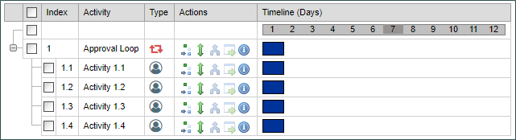

Lesson 4 Exercise: Creating a User Activity

|
Practice Exercise
|
Configure a User Activity |
Instructions
Configure the Change of Student Major Process Timeline by following the directions below.
- In the Student Exercise Folder, open the Change of Student Major Process Timeline.
- Create four (4) child activities for the Approval Loop Parent activity. When you are done, your Process Timeline should look like the example below:

- Configure Activity 1.1 as follows:
- Name the Activity "Faculty Advisor Approval.
- Set the duration to 2 business days.
- Set the participant to the Faculty Advisor form field.
- Create 2 results for the activity: Approve and Deny.
- Set the Order for the results so that Approve is ordered as 1, and Deny is ordered as 2.